El Mapa
Linterna con el movimiento del mando · 1 jugador · ~3 minEquivale aPlan Anual de Auditoría
JugableAuditoría de Control Interno · Tour Conéctate
Todo lo que el visitante va a leer, oír y entender en el stand: los textos exactos, las analogías y el mensaje de cada etapa. Está escrito para que se pueda cambiar.
Una lámina que explique el Plan Anual de Auditoría no se recuerda. La sensación de tener cinco equipos para catorce lugares, y que al final le digan cuál se le escapó y por qué importaba, sí.
Por eso el orden está invertido: primero se ejerce la capacidad, después se le pone nombre. El visitante juega sin que se le hable de auditoría, y al terminar cada etapa se le revela qué acaba de hacer en la vida real.
TERRA INCÓGNITA
Un recorrido por dentro de la compañía
Así marcaban los mapas antiguos las zonas que nadie había recorrido. No quería decir que no hubiera nada. Quería decir que nadie había ido a ver.
Mientras se juega no aparece ni una palabra del oficio. Ni «auditoría», ni «riesgo residual», ni «hallazgo», ni «control interno». Se nombran al final de cada etapa, cuando ya se vivieron. Nombrar antes desarma el efecto.
La segunda regla la impuso la primera prueba con gente: vocabulario de pasillo. La versión inicial decía «catalejo» y «paraje»; nadie sabía qué era eso. Hoy dice «linterna» y «lugar».
| En la vida real | En la pantalla |
|---|---|
| Proceso de la compañía | Lugar |
| Universo auditable | El territorio, el mapa |
| Riesgo emergente | Un peligro que todavía no aparece en las señales |
| Materialidad, valor | Importancia, lo que está en juego |
| Indicador, dato anómalo | Señales |
| Auditar un proceso | Mandar un equipo |
| Recursos del área | Equipos disponibles |
| Plan anual | El mapa |
| Alcance | Hasta dónde llega la linterna |
| Información extraída de la base de datos | Datos crudos (◆ azul) |
| Analizar con Power BI, cruzar cifras | Analizar, la lente |
| Hallazgo | Algo escondido, un descubrimiento (◆ rojo) |
| Controles y manual del proceso | Carteles «✓ Todo en orden» |
| Resistencia del auditado | Muros con excusas |
| Recomendación y plan de acción | Lo que se lleva de vuelta |
| Seguimiento | Volver a ver que cambió |
Tres juegos, uno detrás del otro. El primero se juega solo; los dos últimos, de a dos personas compitiendo, que es lo que hace que la gente se acerque a mirar.
Equivale aPlan Anual de Auditoría
JugableEquivale aEjecución con analítica de datos
JugableEquivale aInforme, recomendaciones y seguimiento
JugableLa Etapa 1 fue aprobada por la Dirección el 21 de septiembre. Las Etapas 2 y 3 quedaron jugables el 22; la 2 ya se probó con los dos mandos y la 3 está recién terminada. Entre una etapa y otra se ve el recorrido completo, con un ✓ sobre la que acaba de terminar.
Lo que se juega: un territorio a oscuras, una linterna que alcanza poco, sesenta segundos y cinco equipos para catorce lugares. Mover el mando ilumina; detenerse sobre un lugar lo revela.
Lo que enseña: que no se puede ir a todas partes, y que elegir a dónde ir es el trabajo. Eso es el Plan Anual.
Explora el mapa. Tienes delante el territorio de toda la compañía. Está a oscuras y nadie lo ha recorrido completo.
Tienes 60 segundos. No te va a alcanzar para mirarlo todo con calma: por eso importa cómo lo recorres.
Decide a dónde ir. Ya viste lo que alcanzaste a ver. Ahora hay que escoger, y no alcanza para todos.
Fíjate sobre todo en el riesgo y en la importancia: las señales ayudan, pero un lugar puede estar en peligro sin que los datos lo estén gritando.
Cada nombre es un guiño. Durante el juego solo se ve el nombre del lugar y una pista; el proceso real aparece al final de la etapa, junto con lo que el equipo va a revisar allí.
| Lugar | Es… | Qué se revisa ahí (se dice al final de la etapa) |
|---|---|---|
| El Gran Caudal | Facturación | Que a cada quien se le cobre lo que consumió: ni un peso de más, ni uno de menos. |
| La Represa | Recaudo y cartera | Lo que se cobró, lo que sigue pendiente, y qué se está haciendo para recuperarlo. |
| El Manantial | Compra y venta de gas | Los contratos de suministro: cuánto se compra, a qué precio, y si eso le conviene a la compañía. |
| La Montaña Perdida | Pérdida No Operacional | A dónde se va el gas que sale y no llega. Cuánto es pérdida técnica y cuánto es otra cosa. |
| Los Grandes Hornos | Gran Industria | La medición y la facturación de los clientes grandes, donde un error pequeño es mucha plata. |
| Los Ramales | Construcciones e Ingeniería | Que las obras se hagan bien y a tiempo, y que lo que se pagó sea lo que se construyó. |
| El Puente Viejo | Mantenimiento de infraestructura | El estado real de la infraestructura, y si el mantenimiento se está haciendo o solo se está reportando. |
| La Fundición | Compras y contratación | Cómo se eligen los proveedores y si los contratos se cumplen como se firmaron. |
| La Torre de Señales | Dirección Digital | Quién puede entrar a los sistemas, qué puede hacer adentro, y qué pasaría si alguien se cuela. |
| El Faro | Atención a usuarios | Qué están reclamando los usuarios, si se les resuelve, y qué nos está diciendo eso. |
| Las Salinas | Tarifas y subsidios | Que las tarifas se apliquen como manda la regulación y que el subsidio llegue a quien debe. |
| Los Acantilados | Seguridad y salud en el trabajo | Que la gente que trabaja en campo vuelva a su casa igual que salió. |
| El Poblado | Gestión Humana | Cómo se contrata, cómo se paga y cómo se cuida a la gente. |
| La Isla Brillante | Brilla | Cómo se otorgan los créditos, cómo se recuperan, y quién responde cuando no se pagan. |
Quien persigue solo la barra de señales —los datos que ya están gritando— pierde las dos. Está medido: saca 40 sobre 100 en criterio.
Aguanta desde hace años y por eso nadie lo mira. Casi no da señales. Su peligro todavía no está en los datos: está en el tiempo.
Aquí está la trampa. Riesgo alto, señales casi en cero. Si solo mirabas la barra azul, lo dejaste pasar. Los datos avisan de lo que ya pasó; no de lo que se está gastando en silencio.
Está lejos de tierra firme y no se parece a nada del resto del mapa. Casi nadie llega hasta acá — y sin embargo se mueve mucho dinero.
Lo que una compañía no revisa porque «no es lo nuestro» suele ser justo lo que menos control tiene.
El resultado se muestra por páginas, para que nada se amontone: tres notas sobre cien (miraste, elegiste bien, priorizaste), a dónde envió cada equipo y con qué criterio, y qué se le escapó. Y después, el aterrizaje: la pantalla que traduce la etapa y le pone su nombre real.
Miraste toda la compañía: catorce lugares, y cada uno le importa a alguien. No alcanzaba para todos. Leíste lo que había en cada uno, escogiste los que más pesaban y decidiste a cuáles ir primero.
Eso es el Plan Anual de Auditoría.
Es la decisión más importante del año del área: define qué se revisa, en qué orden y qué queda por fuera. Se sustenta ante la Dirección, y de ahí sale el trabajo de los doce meses.
Esto es lo que acabas de mandar a revisar, y en este orden.
Miraste lo suficiente y elegiste bien. Eso es exactamente lo difícil.
No recorriste todo el territorio. Nadie puede. Elegiste dónde mirar.
Lo que se juega: los equipos ya llegaron. Ahora hay que recorrer el proceso completo por la cadena del gas, recogiendo datos y analizándolos para que aparezca lo que está escondido. Setenta segundos, tres carriles, dos jugadores compitiendo en el mismo camino.
Lo que enseña: que la información se saca de la fuente, que analizarla es lo que hace visible lo invisible, y que los controles y el manual —los carteles de «todo en orden»— casi nunca son donde está el problema.
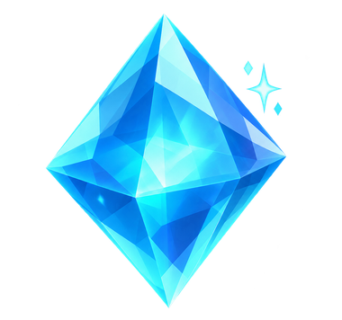
Los datos crudos Se recogen corriendo por encima. Abundan en el carril cómodo del centro.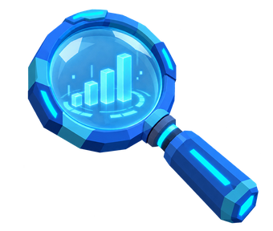
Analizar El gatillo gasta datos y hace visible lo escondido. Sin datos no hay análisis.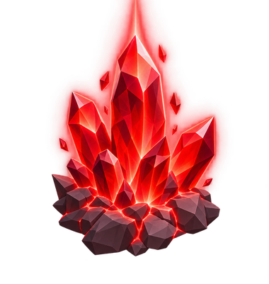
Lo escondido Invisible hasta que se analiza. Casi siempre fuera del carril del centro.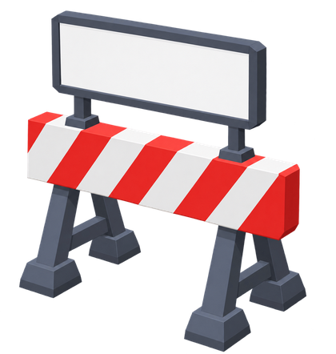
Las excusas Muros con una frase escrita. Chocar cuesta datos y frena.Recorre el proceso de principio a fin. Tus equipos llegaron. Ahora hay que caminar todo el proceso: desde donde entra el gas hasta donde llega la plata, y ver con tus propios ojos qué pasa en cada tramo.
Pueden jugar dos, en el mismo camino. Gana quien encuentre más de lo que estaba escondido.
Las cinco estaciones son lugares que el visitante ya conoce del mapa. Recorrerlas en orden es entender el proceso de principio a fin.
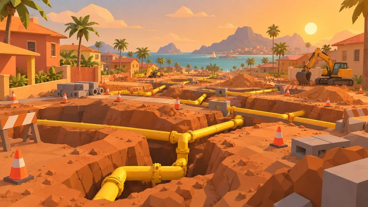
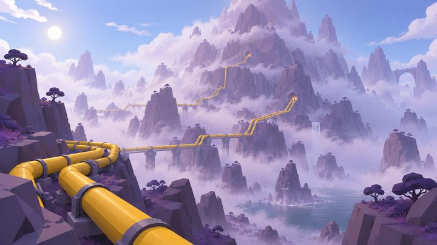
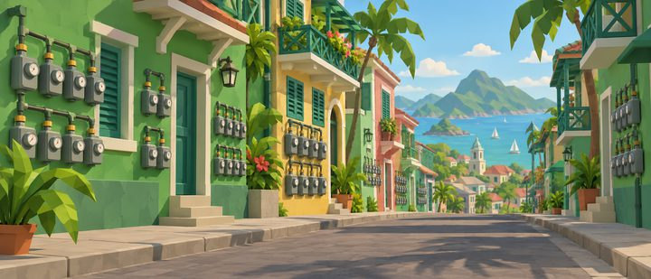
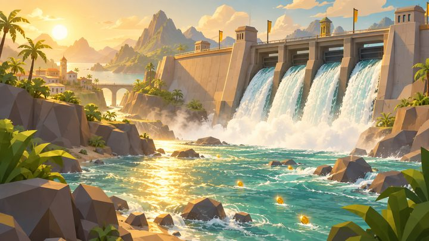
Ocho frases que todo el mundo en la compañía ha oído alguna vez. Es el guiño que hace reír, y de paso dice algo cierto sobre el trabajo.
Al llegar a la meta se muestra, estación por estación, lo que encontró frente a todo lo que había escondido. Es el momento que representa el análisis en Power BI: recién ahí se ve completo lo que durante el camino estaba invisible.
Aquí, por primera vez en la etapa, se nombra el oficio. Es la pantalla más importante del juego: la que convierte una carrera en un mensaje sobre el área.
| Código | En el juego | En la vida real |
|---|---|---|
| C-REV-01 | ◆ Los datos crudos | Sacamos la información directo de la base de datos, no de lo que el proceso reporta de sí mismo. |
| C-REV-02 | La lente | La analizamos con herramientas como Power BI y cruzamos las cifras del proceso con las nuestras. |
| C-REV-03 | ✓ Los carteles | Revisamos los controles y el manual… pero lo que importa casi nunca está ahí. |
| C-REV-04 | El camino completo | Recorremos el proceso de principio a fin: desde donde entra el gas hasta donde llega la plata. |
| C-REV-05 | Lo que brilló en rojo | Se llama HALLAZGO: lo escondido, lo que nadie estaba viendo. Con él se construyen las conclusiones. |
| C-REV-06 | Los muros | Y sí: siempre aparece una excusa en el camino. |
No nos quedamos con lo que el proceso dice de sí mismo. Vamos a ver.
Jugable
Lo que se juega: un Flappy Bird. Una paloma mensajera lleva de vuelta lo que se encontró en el camino; cada pulsación del gatillo bate las alas. Sesenta segundos, los dos jugadores en el mismo cielo.
Lo que enseña: que encontrar no basta. Hay que contarlo, recomendar qué hacer y volver meses después a verificar que se hizo. No es difícil: es insistente. Siempre hay una columna más, y ese cansancio es el mensaje.
| En el vuelo | Qué es |
|---|---|
| Los sobres que lleva la paloma | El informe: tantos sobres como hallazgos trajo de El Camino, más tres de base. Quien más encontró, más tiene que entregar. |
| Los aros dorados | Las recomendaciones y los planes de acción: atravesarlos entrega un sobre. |
| Los puestos de control | El seguimiento: volver a pasar y verificar que el plan se cumplió. |
| Las columnas con una frase | Las excusas del seguimiento, las que aparecen meses después. |
Llévalo de vuelta. Encontraste lo que nadie estaba viendo. Ahora hay que contarlo, y eso es otro viaje: todo el mundo tiene una razón para dejarlo para después.
Un hallazgo que nadie verifica es una anécdota.
Jugable
Al terminar cada etapa se vuelve a una vista con las tres paradas del recorrido: la que acaba de terminar recibe su ✓, el sendero se ilumina hasta la siguiente y se entra en ella. Sirve para dos cosas: que el visitante sepa cuánto lleva y cuánto falta, y que el recorrido se vea como uno solo y no como tres juegos sueltos.
Y arriba, según por dónde vaya: «Tres tramos. Empecemos por el primero.» · «Un tramo menos. Queda camino.» · «Recorriste los tres tramos.»
Tres páginas, al terminar el recorrido completo. Es el único momento donde se dice todo.
Primero miraste todo el territorio y decidiste a dónde ir. Después fuiste a la fuente, recorriste el proceso de principio a fin y encontraste lo que nadie estaba viendo.
Eso es Auditoría Interna.
No nos limitamos a probar los controles ni a seguir el manual: entendemos el proceso completo para encontrar lo invisible. Así es como generamos valor.
Casi nadie la encuentra, porque para verla hay que mirar por fuera del mapa. Es el negocio que no se parece al resto del territorio.
Lo que una compañía no revisa porque «no es lo nuestro» suele ser justo lo que menos control tiene.
Jugaste 3 de las 3 etapas. Así se ve el camino completo.
Esto es lo que hacemos. Todos los años, en toda la compañía.
El Camino ya se juega en 3D. Cámara detrás del explorador, tuberías amarillas de gas entre los carriles, casas caribeñas y palmeras a los lados, y un paisaje distinto en cada tramo del proceso. Estas son capturas del juego, no ilustraciones:
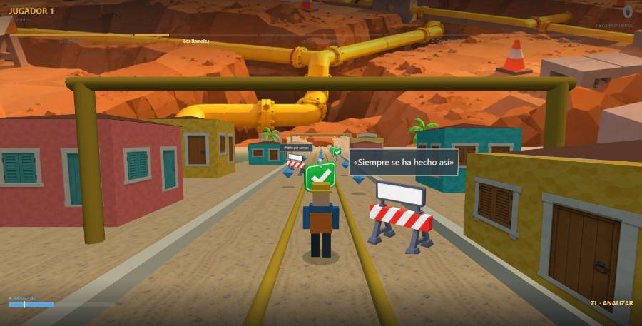
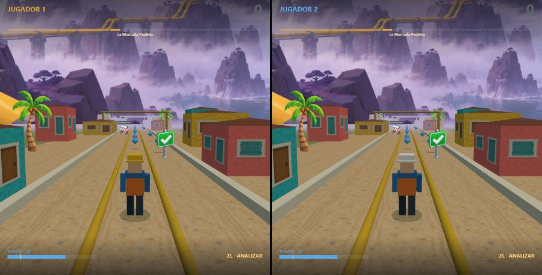
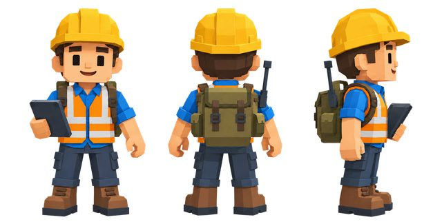
El explorador Casco, chaleco y mochila: el que va a ver. El segundo jugador lleva casco blanco.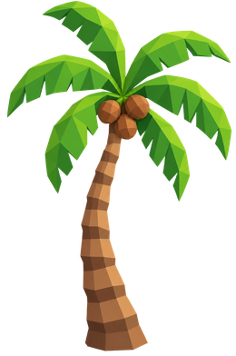
El Caribe, no un metro Palmeras, casas de colores y sol: es Barranquilla, no una ciudad cualquiera.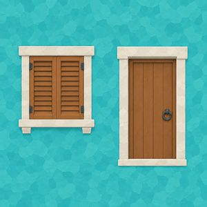
Las casas del camino Las fachadas que pasan a los lados mientras se corre.| Qué | Estado |
|---|---|
| Etapa 1 · El Mapa | Jugable y probada |
| Etapa 2 · El Camino | Jugable y probada con dos mandos |
| Pantalla entre etapas | Jugable |
| Etapa 3 · El Regreso | Jugable |
| El Camino en 3D | Construido |
| Módulo de mandos (batería, relevo, dos jugadores) | Terminado |
| Guion y documentación | Al día |